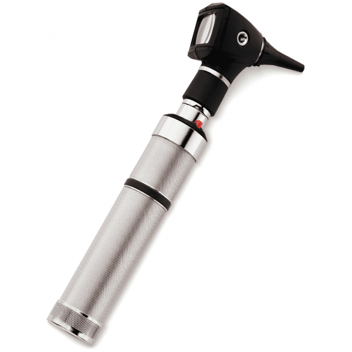
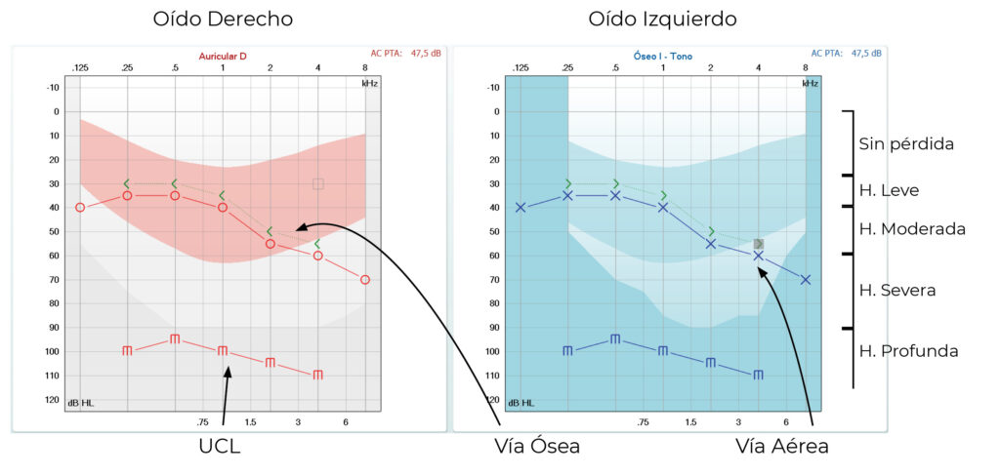
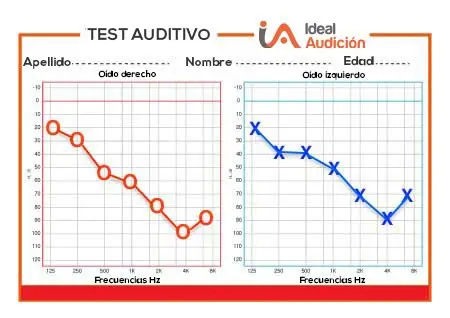

Valoración de las estructuras del oído y garganta
La valoración otorrinolagingológica de la persona pasa por valorar las estructuras que forman el oído, la nariz faringe y laringe así como valorar las funciones que estas estructuras poseen: valoración de la capacidad auditiva, del equilibrio, del gusto, del olfato y sonora.
Valoración del oído
En cuanto a la valoración del oído, para comenzar, debemos ser conscientes de las estructuras que lo componen; a saber:
- Oído externo: Conformado por el pabellón auricular y el conducto auditivo.
- Oído medio: Conformado por la membrana timpánica, martillo, yunque y estribo.
- Oído interno: Conformado por la cóclea y canales semicirculares, trompas de Eustaquio y los nervios (vestibular, facial y auditivo).
Por lo general, las personas acudirán a una valoración si presentan otalgia, hipoacusia, otorrea, acúfenos o vértigos.
En la valoración del oído externo comenzará con una visualización directa del pabellón auricular. Se debe valorar su integridad así como la ausencia de inflamación o heridas. Durante esta fase, si la persona tiene dolor, se puede realizar la prueba del trago (consiste en dirigir y presionar el trago hacia el inicio del canal auditivo. Si este movimiento resulta en dolor para la persona es un indicativo de otitis).
Durante la exploración del pabellón auricular se puede observar el conocido como oreja de coliflor, una afección irreversible que causa con deformidad del pabellón por traumatismo repetidos (típica de los deportes de contacto)
Tras ello, se debe realizar la valoración del conducto auditivo de la persona hasta la membrana timpánica. Para ello se hará uso de un instrumento conocido como otoscopio. Para su uso se realiza un movimiento diagonal “hacia atrás y hacia arriba” del pabellón auricular con el objetivo de linealizar el conducto auditivo y la membrana timpánica (en niños solo se realiza un movimiento de estiramiento “hacia atrás”).

Con ello, debemos valorar la integridad del conducto auditivo, la ausencia de pérdida de solución de la piel o de cera y la presencia de líquido o inflamación del conducto. Finalmente, debemos realizar una valoración de la membrana timpánica. Para valorar la membrana timpánica debemos valorar su color, integridad, reflejo luminoso y estructuras. Si sospechamos de defectos en la membrana timpánica se puede realizar una timpanometría; prueba que cosiste en valorar la capacidad de transmisión del sonido de la membrana y los huesos hacia la cóclea (puede ayudar en la diferenciación entre hipoacusia neurosensorial o conductiva).
En la valoración del oído medio se valoraran las estructuras del yunque, martillo y estribo. La visualización directa de la integridad de éstas estructuras se debe realizar a través de tomografías computarizadas o resonancia magnéticas. Por ello, por general, se valoran las funciones que éstas estructuras llevan a cabo, es decir, la transmisión mecánica del sonido hacia la cóclea. Para ello, se realizan las pruebas de Schwabach, Weber y Rinne. Todas ellas van a hacer uso de un diapasón y utilizaran la conducción ósea.
Prueba de Schawabach: Consiste en valorar el tiempo de audición de un diapasón vibrante con el tiempo a lo largo el cual la persona lo oye un sujeto con audición normal.
Prueba de Weber: Consiste en colocar un diapasón vibrante en el lóbulo frontal de la persona y valorar si tiene la capacidad oírlo. Con ello, se valora la función auditiva en ambos oídos a la vez. La persona oirá correctamente únicamente en aquel oído sano.
Prueba de Rinne: Consiste en colocar un diapasón vibrante sobre cada uno de los oídos (en el hueso temporal). Con ello, se valora la conducción auditiva de cada oído por separado.
Pruebas de Weber y Rinne
En la valoración del oído interno se valoraran las estructuras de la cóclea y el aparato vestibular. La visualización directa de la integridad de éstas estructuras se debe realizar a través de tomografías computarizadas o resonancia magnéticas. Por ello, por general, se valoran las funciones que estas estructuras llevan a cabo, es decir, la audición neurosensorial y el equilibrio.
Valoración del equilibrio
La valoración del equilibrio se realiza a través de pruebas que valoran la capacidad del aparato vestibular para realizar su función. En ella encontramos:
Prueba de Romberg: Se coloca a la persona en posición erguida y de pie. Primero se pide a la persona que se mantenga en esa posición 30 segundos. Posteriormente, se le pide a la persona que cierre los ojos y se mantenga otros 30 segundos de pie.
Prueba de Barany: Se coloca a la persona en posición erguida y de pie. Se le pide que extienda los brazos hacia delante y que extienda los brazos. Finalmente, se le pide a la persona que se mantenga en esa posición 30 segundos.
Si la persona no tiene la capacidad de mantener el equilibro en alguna de las pruebas, éstas se consideran positivas.
- Prueba calórica: Se inyecta aire caliente en el conducto externo del paciente provocando un nistagmo involutario. Se realiza en ambos oídos y se comparan ambas respuestas. Para que la prueba sea anodina, ambos resultados deben ser idénticos.
Finalmente, en una valoración global de la persona, debemos valorar la presencia o ausencia de nistagmo.
Valoración de la función auditiva
En cuanto a la valoración de la cóclea, podemos encontrar el uso de la respuesta auditiva del tronco encefálico. Dicha prueba genera un potencia eléctrico detectable por el nervio craneal VIII, pudiendo valorar si el paciente tiene capacidad auditiva a nivel de nervio y los decibelios que los nervios son capaces de detectar. Los electrodos son colocados en ambos oídos y en el cuero cabelludo.
Valoración de la audición general
Una de las pruebas más características de la valoración del oído consiste en la audimetría. Dicha prueba tiene como objetivo valorar la capacidad auditiva del paciente y detectar, si fuera el caso, de hipoacusias. Si la prueba resultase anómala, es decir, existiese una hipoacusia, se debería que tipo de hipoacusia es (transmisión, neurosensorial o mixta).
Para la realización de la audiometría, se coloca a la persona en una habitación con aislamiento acústico y se le colocan unos auriculares y un tambor en el hueso temporal. Se valora todo el espectro audible (125 kHz hasta 12.000 kHz) valorando la cantidad de decibelios que una persona necesita para oír cada una de las frecuencias. Se valora tanto el oído izquierdo como el oído derecho y se realiza la valoración tanto de forma auditiva como ósea.
Para su realización, se escoge una frecuencia y se comienza con 10 decibelios. Si la persona es capaz de oírlo se bajan los decibelios hasta que la persona deje de detectar el sonido. Dicho procedimiento se realiza nuevamente para el sonido osea. Tras ello, se apuntan los decibelios mas bajos que la persona ha sido capaz de detectar para esa frecuencia tanto para la audición ósea como para la audición auditiva.

Interpretación de la audiometría
En la audición normal, una persona posee una capacidad auditiva, tanto osea como sonora, entorno a los 10 - 20 dB en todas la frecuencias audibles. Aquí pueden ocurrir 3 situaciones o una combinación de las 3:
Situación 1: Diferencia de decibelios en una frecuencia entre la audición ósea y sonora. Esta situación se conoce como “GAP” y objetiva una hipoacusia de transmisión debido a que son necesarios mayores decibelios para que la persona detecte el sonido a través del conducto auditivo que por el conducto óseo.
Situación 2: Diferencia de decibelios en una frecuencia entre oídos. Esta situación demuestra la existencia de una hipoacusia unilateral. Uno de los oídos tiene menor capacidad auditiva que el otro en una determinada frecuencia.
Situación 3: Diferencia de decibelios entre frecuencias. Esta situación demuestra la existencia de una hipoacusia en una determinada frecuencia. Esta situación suele deberse generalmente a la existencia de un trauma acústico.
En la presbiacusia, la persona tiene una pérdida de audición en la frecuencias altas. Por ello, el patrón típico de la audiometría es un aumento de los decibelios necesarios para escuchar la frecuencia a media que recorre el espectro audible.

Valoración de la nariz, senos paranasales y garganta
Valoración de la nariz y senos paranasales
Valoración de la nariz
En la exploración de la nariz se debe realizar una anamnesis de la persona; realizando preguntas tales como:
- Uso de alcohol y/o tabaco.
- Pérdida de peso.
- Fiebre.
- Odinofagia, estornudos, congestión nasal, pérdida del gusto u olfato.
- Presencia de traumatismo.
- Alergias, problemas para dormir, uso de dispositivos respiratorios.
Tras ello, se realiza una exploración física de la nariz. Para ello, se puede hacer uso de un especulo nasal que se inserta por ambos orificios de la nariz para explorarla tanto de forma anterior como posterior. A su vez, se puede hacer uso de un rinoscopio junto a un fibroendoscópio nasal. En la valoración física de la integridad de la piel, la ausencia de úlceras secreciones…
Valoración de los senos paranasales
La evaluación de los senos paranasales se debe realizar a través de pruebas de imagen como en la radiografía. A su vez, se puede ejercer presión sobre ellos para valorar la presencia de dolor a la palpación sugiriendo inflamación (posible sinusitis).
Valoración de garganta
En la valoración de la garganta se debe valorar la cavidad oral, la faringe y la laringe. En cuanto a la anamnesis de la persona, son preguntas importantes:
- La existencia de implantes dentales.
- El virus del papiloma humano (aumenta el riesgo de Cáncer de garganta).
- Consumo de tabaco y/o alcohol.
Valoración de la cavidad oral
Se comienza con la exploración física de la cavidad, valorando la integridad de la piel y mucosas. A su vez, se valora la integridad de la lengua y la movilidad de ésta en todos sus planos. Se debe realizar una valoración de la úvula y de las amígdalas, valorando la presencia de placas bacterianas (la presión realizada sobre ellos de forma directa puede indicar amigdalitis). Se puede hacer uso de un depresor para mayor comodidad. Finalmente, se debe valorar la situación de las piezas dentales así como la capacidad de masticación de la persona.
Valoración de la faringe
En cuanto a la exploración de la faringe, se debe explorar tanto la rinofaringe como la orofaringe y la hipofaringe.
La orofaringe se puede explorar haciendo uso de un depresor mientras que para la valoración de la rinofaringe o la hipofaringe se hace necesario el uso de fibroscopio o un espejo (previo a anestesia). Durante la exploración, se debe valorar la integridad de la piel y mucosas, la presencia de exudado…
Una de las causas principales de la faringitis aguda es el estreptococo. Existen test de rápida realización para diferenciar entre la faringitis bacteriana (por estreptococo) y la faringitis vírica
Valoración de la laringe
La valoración física de la laringe se debe realizar haciendo uso de un laringoscopio previo anestésico local. Sin embargo, podemos realizar una valoración general de la laringe a través de su función:
La valoración de la calidad de la voz se puede realizar a través de la valoración GRABS.
| Área | Grado leve | Grado moderado | Grado severo |
|---|---|---|---|
| Grado de la disfonía | |||
| Rugosidad o ronquera | |||
| Cansancio vocal que se recibe | |||
| Presencia de voz aérea | |||
| Tensión vocal que se percibe durante el habla |
En cuanto a la valoración respiratoria, un estridor respiratorio así como una “tos perruna” nos debe hacer sospechar de una inflamación de la laringe.
Finalmente, se debe valorar la capacidad deglutoria de la persona. En el movimiento de la deglución tanto la laringe como la “nuez” se mueven en movimiento coordinados. Una discordancia entre ellas puede hacernos sospechar de una inflamación de la laringe o de un proceso tumoral.